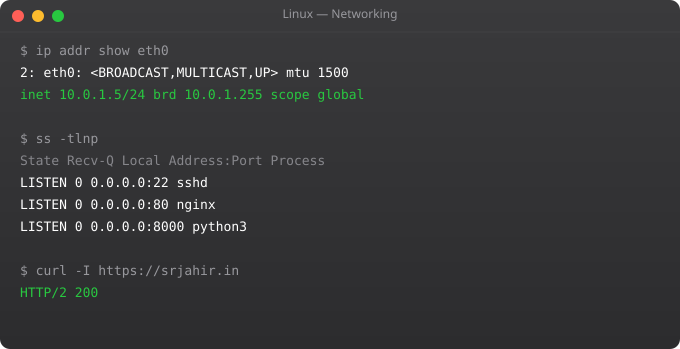

Network troubleshooting is one of the most common tasks in Linux systems work. A service is unreachable, a deployment fails to connect to a database, a container cannot reach an external API -- you need to debug quickly and systematically. Linux has a rich set of networking tools, and knowing them fluently means the difference between a 10-minute fix and a 3-hour debugging session.
ip addr show # Show all interfaces and IPs
ip addr show eth0 # Show specific interface
ip link show # Show interface status
ip route show # Routing table
ip route get 8.8.8.8 # Which route does traffic take?
# Old commands (still common on older systems)
ifconfig # Show interfaces
ifconfig eth0 # Show specific interface
route -n # Routing table (numeric)ss -tlnp # TCP listening sockets with process names
ss -ulnp # UDP listening sockets
ss -s # Summary statistics
ss -tp # Established TCP connections with processes
ss -tlnp | grep :80 # Is something listening on port 80?
# lsof for file and network
lsof -i :8080 # What process uses port 8080?
lsof -i tcp # All TCP connections
lsof -i -n -P # All network connections, numeric
nmap localhost # Scan open ports locally
nmap -p 80,443,8080 server # Scan specific portsping google.com # Basic reachability test
ping -c 4 8.8.8.8 # Send exactly 4 packets
traceroute google.com # Show network path
# curl -- the essential HTTP testing tool
curl https://api.example.com/health
curl -I https://example.com # Headers only
curl -v https://example.com # Verbose (shows TLS, headers)
curl -X POST https://api.example.com/data \
-H "Content-Type: application/json" \
-d "{"key":"value"}"
curl --connect-timeout 5 http://service # Timeout after 5s
curl -L https://example.com # Follow redirects
# wget
wget https://example.com/file.tar.gz
wget -q -O - https://example.com | grep title
# netcat (nc) -- raw TCP testing
nc -zv hostname 5432 # Test if port 5432 is open
echo "" | nc -w 1 host 8080 && echo "open" || echo "closed"dig example.com # Full DNS query
dig example.com A # IPv4 address record
dig example.com MX # Mail exchange records
dig +short example.com # Just the IP
dig @8.8.8.8 example.com # Query specific DNS server
nslookup example.com # Simple DNS lookup
host example.com # Quick lookup
cat /etc/resolv.conf # Your DNS server config
cat /etc/hosts # Local hostname overrides
# Check DNS propagation
dig example.com @8.8.8.8 # Google DNS
dig example.com @1.1.1.1 # Cloudflare DNS# scp -- simple file copy over SSH
scp file.txt ubuntu@server:/home/ubuntu/
scp ubuntu@server:/var/log/nginx/error.log ./
scp -r ./mydir ubuntu@server:/home/ubuntu/
scp -i key.pem file.txt ubuntu@server:/home/ubuntu/
# rsync -- efficient sync (only transfers changes)
rsync -avz ./local/ ubuntu@server:/remote/ # Sync local to remote
rsync -avz ubuntu@server:/remote/ ./local/ # Sync remote to local
rsync -avz --delete ./local/ ubuntu@server:/remote/ # Delete removed files
rsync -avz --dry-run ./local/ ubuntu@server:/remote/ # Preview changesufw status # Show firewall status and rules
ufw enable # Enable firewall
ufw allow 22 # Allow SSH
ufw allow 80 # Allow HTTP
ufw allow 443 # Allow HTTPS
ufw allow from 10.0.0.0/8 # Allow from private network
ufw allow 5432 from 10.0.1.0/24 # PostgreSQL from app subnet only
ufw deny 8080 # Block port 8080
ufw delete allow 80 # Remove a rule
ufw status numbered # Show rules with numbers
ufw delete 3 # Delete rule number 3nc -zv hostname 8080 gives a clear open/closed result. Or: curl -v telnet://hostname:8080. From bash: (echo > /dev/tcp/hostname/8080) 2>/dev/null && echo open || echo closed. Install nmap for more detailed port scanning.
ss is the modern, faster replacement. It reads kernel socket data directly. netstat may not be installed on modern Ubuntu by default (it is in the net-tools package). Use ss -tlnp for listening TCP sockets with process names.
iperf3 for bandwidth testing between two hosts. mtr (traceroute + ping combined) for routing and latency. iftop for real-time per-connection bandwidth. vnstat for historical bandwidth statistics. Check /proc/net/dev for interface statistics.
Edit /etc/netplan/00-installer-config.yaml. Set dhcp4: false and add addresses, gateway4, nameservers. Apply with: sudo netplan apply. On older systems, edit /etc/network/interfaces directly.
rsync compares file size and modification timestamp by default. Add --checksum to compare file contents (slower but more accurate). rsync only transfers the different parts of files, making it extremely efficient for large files or directories with many unchanged files.
In Part 7, we cover shell scripting -- writing bash scripts to automate repetitive Linux tasks.
← Back to Blog